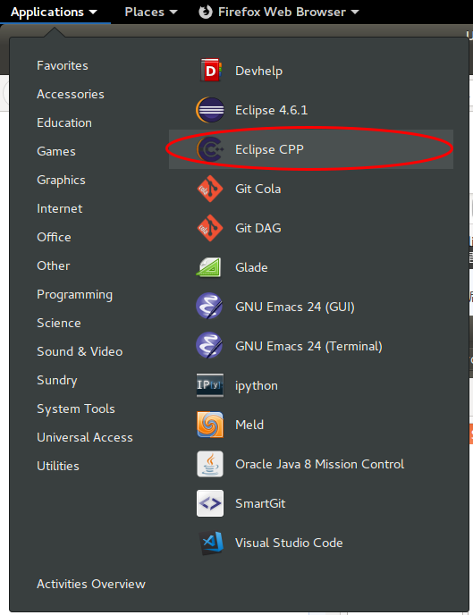
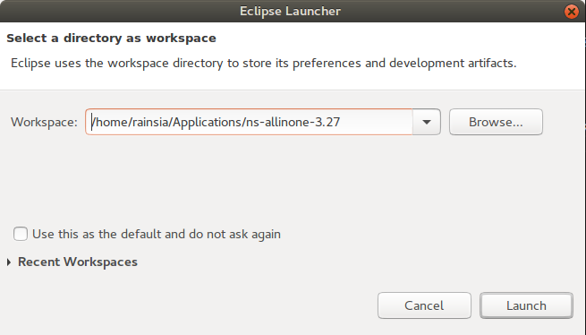
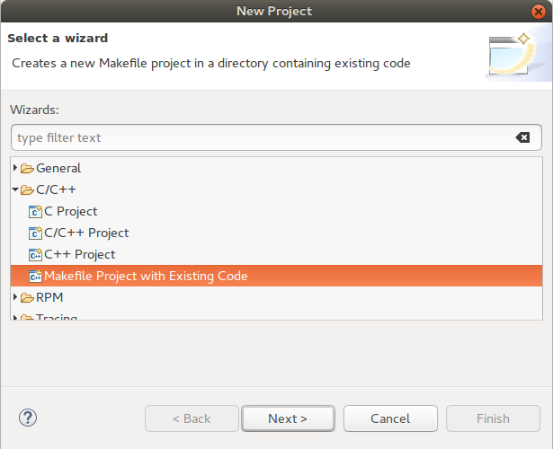
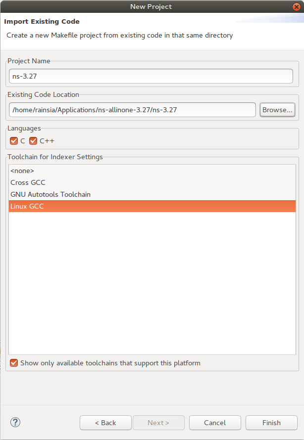
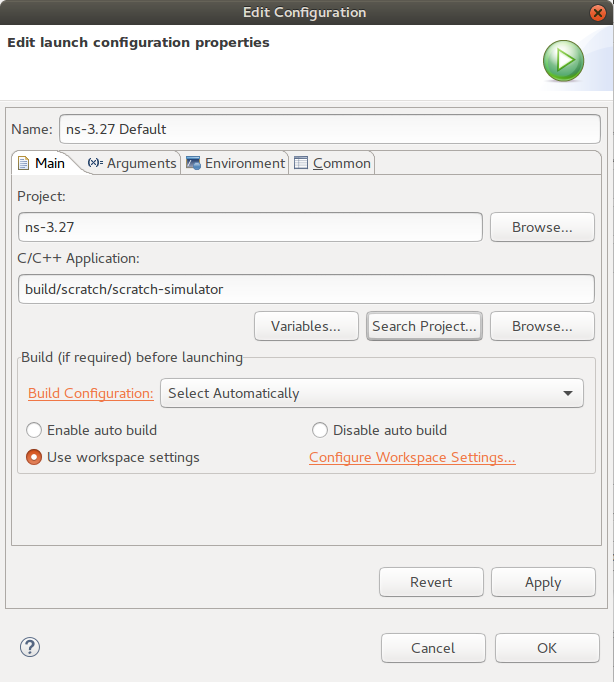
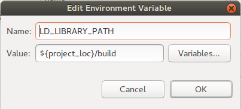
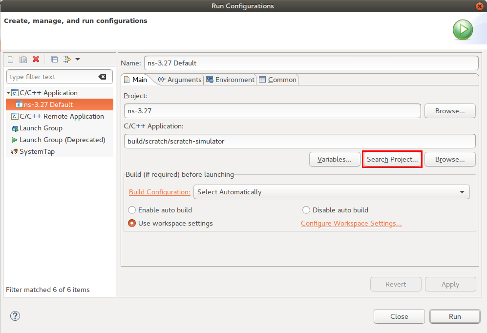

本章主要介绍如何在Linux平台（主要使用Ubuntu系统）下，建立NS-3的运行环境。可以进行NS-3程序的仿真工作。
NS-3简介
NS-3是一个离散事件驱动网络模拟器。是为了取代知名的NS-2模拟器而开发的另外一个开源项目。官网为：http://www.nsnam.org/。
NS-3本身也是多个项目合并而成。使用C++作为后台，并淘汰了NS-2当中的TCL脚本，而使用Python取代（实际也可以完全不是Python的部分，而完全使用C++编写仿真）。
NS-3实现了大部分的Internet协议和算法，可以进行多种网络的仿真，包括有线网络、WIFI、4G等。
对于比较复杂的技术NS-3包含一个DCE模块，可以直接运行原生Linux程序作为仿真的一部分。这样可以方便地调用原生的应用程序、路由算法、协议栈等等，以获得更加真实的仿真效果。
NS-3和NS-2的联系与区别
NS-3虽然叫做NS的版本3，但事实上跟它广泛流行的前任NS-2并非完全一致。它仅仅继承了NS-2的名称而已。NS-3是一个全新的模拟器，不支持NS-2的API，也不支持任何已经存在的NS-2的模块或者脚本。
但是NS-3当中的很多算法和协议确是受到了NS-2的启发。或者说有很多算法和协议都是从NS-2的模块中移植（当然是基本都重写了一遍）过来的。
NS-3当中支持很多NS-2所不支持的特性。例如：正确的多网卡处理、IP寻址策略的使用、更详细的802.11模块等等。NS-3能生成pcap文件，因此可以使用类似于WireShark的软件对数据进行分析。
NS-3的开发环境
NS-3的脚本由C++或者Python编写。从NS-3.2开始，NS3的API提供了python语言接口，但是所有的模块都是由C++编写的，Python仅仅是做了一种映射。NS-3使用waf作为其自动化编译工具（类似于流行的make），使用Mercurial作为其版本管理系统（类似于流行的git）。
NS-3基本上只能运行在Linux系统中，或者可以使用Windows系统安装虚拟机，或者安装Gygwin环境。但是Linux原生环境是最好的。本文中，我所使用的是Ubuntu环境，版本为16.04.4 LTS x64。
NS-3的编译
环境配置
使用Ubuntu来开发NS-3还是比较方便的。
- 安装编译环境。直接运行
1 | sudo apt-get install build-essential |
来安装编译所需的环境。实际上就是安装了GNU GCC编译工具套装和相关的库。
- 安装Ubuntu Make工具
Ubuntu Make（umake）前身是 Ubuntu Developer Tools Center。可在 Ubuntu 平台上快速安装各种语言的开发环境和开发工具。我们将使用umake来安装Eclipse工具，以便后面用来开发NS-3。
直接运行命令：
1 | $ sudo add-apt-repository ppa:ubuntu-desktop/ubuntu-make |
来添加umake的ppa源。
随后刷新软件仓库：
1 | $ sudo apt-get update |
然后安装umake软件：
1 | $ sudo apt-get install ubuntu-make |
可以通过查看umake的帮助来了解umake的使用。其实使用过程非常简单，我们仅仅使用它来安装Eclipse工具，这里就不过多讲解。
- 安装JDK
Eclipse是使用Java开发的，因此要运行Eclipse，必须先安装JDK。如果选择其他的C++开发工具来开发NS-3，则可以不用安装JDK和接下来的Eclipse了。
在Ubuntu中安装JDK也比较简单。Linux中JDK有两种版本：OpenJDK和Oracle JDK。对于开发NS-3来说，安装两者都可以。由于我本身还需要开发Java程序，所以我还是选择Oracle官方的JDK版本。
Ubuntu本身的源当中没有提供Oracle的JDK，因此需要添加第三方的ppa源。
1 | $ sudo add-apt-repository ppa:webupd8team/java |
然后更新软件仓库：
1 | $ sudo apt-get update |
最后安装JDK9：
1 | $ sudo apt-get install oracle-java9-installer |
安装过程中，会要求我们接受授权说明。
最后配置JDK的环境变量，PPA源中已经给我们写好了脚本，直接安装即可：
1 | $ sudo apt-get install oracle-java9-set-default |
Update: 自从Oracle发布JDK11之后，Oracle改变了官方JDK的使用授权：
1 | You may not: |
换句话说，JDK11已经不能在生产环境免费使用，因此我更加推荐安装OpenJDK。在ubuntu当中安装OpenJDK也更加的方便。推荐使用SDKMan来安装。
打开终端输入（如果没有安装过curl需要先通过sudo apt-get install curl来安装）：
1 | $ curl -s "https://get.sdkman.io" | bash |
来安装sdkman，这一步比较简单，直接按照提示做即可。安装完成之后执行如下命令进行初始化：
1 | $ source "$HOME/.sdkman/bin/sdkman-init.sh" |
初始化完成之后执行如下命令：
1 | $ sdk version |
如果能够正常输出sdkman的版本，那么证明SDKMan已经配置完成了。最后运行：
1 | $ sdk install java |
即可安装OpenJDK11。安装完成后，SDKMan会询问是否要将OpenJDK11设置为默认JDK，选择是即可。
- 安装Eclipse-CPP
Eclipse主要是作为开发Java的工具而广为人知的。其实Eclipse也具有CDT插件，可以用来开发C++程序。我比较熟悉Eclipse的各种功能，因此主要使用Eclipse作为开发工具。如果熟悉其他的工具，完全可以使用其他的IDE来开发NS-3。
使用umake安装Eclipse：
1 | $ umake ide eclipse-cpp |
运行完成后，Eclipse-CPP即安装完成。可以从程序中找到Eclipse，点击即可启动，如下图所示：

下载NS-3
最简单的下载NS-3的方法就是从官方网站下载最新的稳定版，下载之后会得到一个.tar.bz2的压缩包，将其解压到用户目录当中合适的路径下。我一般喜欢放在~/Applications/目录中。
例如我下载的是ns-3.27版本，解压后得到如下的目录结构：
ns-allinone-3.27
├── bake
├── build.py
├── constants.py
├── constants.pyc
├── netanim-3.108
├── ns-3.27
├── pybindgen-0.17.0.post58+ngcf00cc0
├── README
├── RemoteSystemsTempFiles
├── util.py
└── util.pyc
其中build.py是整体编译的脚本，第一次可以是使用这个脚本进行编译。netanim-3.x是用来回放网络运行动画的工具。ns-3.x是正真的NS-3的核心部分，所有功能都有这个包提供。其中也包含了waf的编译脚本，未来更改了NS-3的代码之后，就要通过waf脚本进行编译。
NS-3的编译
第一次可以通过上面的build.py脚本进行编译。build实际上也是调用了waf系统进行编译的。执行build.py脚本之后，可以看到执行过程。
如果不出意外，可以最终看到如下输出：
1 |
|
当看到上述输出的时候表示编译成功。并且会列出已经编译的NS-3模块和未编译的NS-3模块。
如果编译失败，多半是由于某些依赖未满足，此时可以通过Ubuntu的apt-get命令安装相关的库即可。
默认情况下，NS-3自带的所有的示例和测试代码是不会编译的。如果需要同时编译示例代码和测试代码，则可以在执行编译的时候添加参数：
1 | $ ./build.py --enable-examples --enable-tests |
则以后再次编译的时候例子和测试代码都会编译。
第一此编译NS-3之后，我们大部分时候都只修改NS-3的代码，即ns-3.x里面的代码。修改完成之后，我们大部分时候都不需要再次执行build.py来编译，而是直接使用ns-3.x目录中的waf系统来编译。
ns-3.27/
├── AUTHORS
├── bindings
├── build
├── CHANGES.html
├── contrib
├── doc
├── examples
├── LICENSE
├── Makefile
├── README
├── RELEASE_NOTES
├── scratch
├── src
├── test.py
├── testpy.supp
├── utils
├── utils.py
├── utils.pyc
├── VERSION
├── waf
├── waf.bat
├── waf-tools
├── wscript
├── wutils.py
└── wutils.pyc
其中waf就是编译程序，他会读取wscript脚本的配置来进行编译。waf是一个用Python编写的程序。而wscript也是使用Python编写的。有兴趣可以打开查看。
除了waf文件之外，还有一些常用的目录和文件：
- build目录，是存储编译之后的结果
- doc是文档目录，里面包含了文档的源文件，可以使用doxygen工具将源文件编译成html文件，需要注意的是，编译之后的内容会特别大，可能有1~2GB左右，要非常小心，如果系统具有文件预览功能，尽量不要直接打开该目录里面的内容
- examples目录，包含了所有NS-3内置的示例代码，如果默认不编译examples的话，可以将其复制到scratch目录中运行，效果是一样的
- scratch目录，包含了所有NS-3仿真的脚本，以后我们自己创建网络环境进行仿真的代码就放在这个目录中
- src目录，包含了所有NS-3的模块的代码，如果要修改NS-3的行为，主要就修改里面的文件
- test.py文件，主要是用于运行测试的，保证系统运行是正确的
使用waf编译和使用build.py编译是差不多的，但是必须在ns-3.x目录下执行：
1 | $ pwd |
由于之前使用build.py编译成过，因此这次编译会特别快。原因在与waf系统只会编译最近更新过的文件，已经编译，但是未更新的程序文件并不会进行编译（除非它所以来的模块也被修改）。
waf也可以启用和禁用示例代码和测试代码：
1 | $./waf configure --enable-examples --enable-tests |
不同的编译配置
在NS-3当中，存在三种不同的编译配置：debug模式编译、release编译模式和optimized模式编译。
在debug编译模式下，所有编译生成的结果都会携带调试符号，方便我们进行断点调试等等。但是，代价是运行效率会受一定的影响。release模式下，会去除最终文件中的调试信息。而optimized模式下，编译过程会尽量优化运行效率，从而使得调试没有那么方便。此外，需要特别注意的是，只有debug模式下，程序才会输出日志信息（NS-3日志将在下一章进行介绍）。
正常来说，在编写仿真的时候多半使用debug模式。当仿真调试完成，准备进行大规模仿真的时候，再切换成optimized模式，因为一般大规模的网络仿真都会运行很久，例如一周甚至更久。
要配置使用debug模式编译，需要使用
1 | $./waf configure -d debug |
命令。之后再使用
1 | $./waf build |
编译NS-3。其中build命令是默认命令，因此可以只写./waf。
要配置使用release/optimized模式编译，需要使用
1 | $./waf configure -d release/optimized |
需要注意的是，每次更改编译模式之后，都需要重新运行编译命令。
如果不知道当前是什么编译模式，可以使用如下命令查看：
1 | $./waf --check-profile |
可以看到结果，例如：
1 | Waf: Entering directory `/home/rainsia/Applications/ns-allinone-3.27/ns-3.27/build' |
因此，可以知道目前处于debug编译模式。
使用optimzied在编译一次系统，然后进入build目录查看文件：
Update: 在新版NS3版本3.28和3.29当中，编译后的生成的.so文件并不是直接放置到build目录当中，而是放置到其下的lib目录当中的。
1 | bindings libns3.27-dsdv-debug.so libns3.27-mpi-optimized.so libns3.27-test-debug.so |
可以发现既有debug.so文件，又有optimized.so文件。说明：
- 不同的编译模式的编译结果是独立存储的，改变编译模式必须再次编译。
- 默认情况下，每个Ns-3的模块是编译成一个动态链接库so的。
实际上NS-3也提供了静态链接方式。每次编译NS-3的时候，最终脚本会成为一个可执行文件。这个可执行文件包含了所有的模块功能。使用静态链接理论上来说可以进一步提高运行效率（因为少了动态链接时，文件之间调用相互查找和加载的过程）。但是其问题在于每次改变一点点程序的内容，几乎所有模块都得重新编译，编译时间过长。
使用静态模式的方法是在./waf configure命令时传入启动静态编译的参数：
1 | $ ./waf configure --enalbe-static |
静态模式的另外一个缺点是，不能使用python脚本来编写仿真。具体使用静态还是动态链接模式，要看具体情况而定。如果仿真都可以开发完成，仅仅是为了让运行效率更高，又不用频繁地修改仿真脚本，那么可以考虑静态链接模式。
开发NS-3程序
一般自己写的NS-3的仿真程序都放置在scratch目录当中，只有自己需要修改或者自己创建模块才需要去修改src目录当中的程序。自己的写的仿真程序都必须放置在scratch目录运行。
运行方式
在NS-3根目录当中（例如ns-3.27）目录当中执行命令：
1 | ./waf --run "script-name" |
来运行脚本。其中script-name是放在scratch目录当中的脚本的名字（不带.cc后缀）。
调试
如果程序当中有错，那么直接运行程序，会有错误提示，但这个错误提示没有任何帮助。需要进入调试模式进行程序调试。例如下面的程序：
1 | /* -*- Mode:C++; c-file-style:"gnu"; indent-tabs-mode:nil; -*- */ |
程序当中故意写了一个错误。我们使用
1 | ./waf --run "try-debug" |
执行这个程序的时候，会得到如下结果：
1 | Waf: Entering directory `/home/rainsia/Applications/ns-allinone-3.27/ns-3.27/build' |
从结果当中可以看出，在错误出现之前的代码都是执行了的。在发生错误之后的代码都没有被执行。错误发生的时候，程序就终止运行了，并且系统提示程序输出了信号值SIGSEGV（在有些系统上直接提示segment fault，段错误消息）。这个C++程序出错的提示非常的不直观，但是waf工具会给我们一个提示：可以使用gdb来进行调试的格式。如果没有安装过gdb可以先安装gdb：
1 | sudo apt-get install gdb |
安装完成之后可以运行如下命令：
1 | ./waf --run "try-debug" --commandtemplate="gdb %s" |
之后会进入gdb调试模式：
1 | Waf: Entering directory `/home/rainsia/Applications/ns-allinone-3.27/ns-3.27/build' |
然后就等待用户输入gdb命令。我们输入run运行程序，得到如下结果：
1 | (gdb) run |
这个输出比直接执行程序得到了更多的信息，例如代码错误在哪个文件里面，在具体的哪一行代码。我们可以使用list命令列出整个函数的代码：
1 | (gdb) list |
这样就方便我们查看究竟是为什么会引起这个错误。调试完成之后，使用quit命令退出（程序未结束的情况下退出，一般会进行询问是否退出，选择yes即可）。
gdb也可以在使用run命令之前就为程序设置断点，然后进行单步调试，中间可以打印任何变量和表达式的值。具体内容请参考man gdb或者这个链接。
使用Eclipse开发NS-3程序
配置项目
安装完Eclipse-CPP之后，就可以利用Eclipse来查看和编写NS-3代码了。Eclipse启动的时候，会要求选择一个Workspace。我习惯将Workspace建立在NS-3的主目录中，如下图所示：

然后启动Eclipse，并创建一个新的Eclipse工程。选择File -> New -> Project..，然后在弹出的新建工程对话框当中展开C/C++选项，随后选择Makefile Project with Existing Code，并点击Next。

然后输入工程名称ns-3.27，并选择工程的目录到ns-3.27目录下。同时不要忘记在Toolchain中选择Linux GCC，这将向工程中添加标准的C++头文件。

随后点击Finish按钮完成工程的创建。工程第一次创建时，将进行源代码文件的解析工作，可能会消耗一些时间，耐心等待解析过程结束。当代码解析完成后，Eclipse会建立项目的符号库，方便以后编程的时候进行代码提示。
运行程序
NS-3中所有的仿真脚本都在scratch目录中。每一个scratch脚本都会被编译成为一个可执行程序。要运行程序，直接运行这些程序即可。但是，如果使用动态链接库编译模式编译出的可执行文件需要配合动态链接文件才能运行。如果试图直接在Eclipse里面运行，会提示找不到相应的.so文件。因此需要添加动态链接库依赖。
点击菜单：Run -> Run Configurations，然后选择新建一个运行配置，选中新建的运行配置。在右边对话框中点击Search Project…，然后在弹出的列表中选择需要运行的程序，例如scratch-simulator，点击OK按钮确定。

然后添加动态链接库依赖。切换到Environment标签页，然后点击New按钮新建环境变量。变量名(name)为：LD_LIBRARY_PATH，变量值(value)为${project_loc}/build。
Update: 经过测试，最新版的NS3版本3.28和3.29下面，需要设置路径为${project_loc}/build/lib才能正常运行。如果这样设置还是提示无法找到.so文件，那么可以直接设置绝对路径到ns-3.29/build/lib目录下面。

点击OK完成环境变量设置。在对话框中点击Run按钮即可运行程序。此时程序应该可以正常执行，不会提示找不到so文件。
如果要运行其他仿真脚本，则需要再次进入运行配置，然后再次点击Search Project…按钮，选择相应的程序。最后点击Run按钮运行程序。

跟踪调试程序
如果要调试程序，可以选择在程序中设置好相应的断点（在要设置断点的那一句代码行号前面双击鼠标左键可以设置/取消断点）。随后选择菜单Run -> Debug Configurations，然后在对话框中选择刚刚配置好的选项。然后点击Search Project…按钮选好要执行的程序。最后点击Debug按钮进行调试。
程序进入调试模式之后，Eclipse会询问是否进入调试视图，选择是进入调试视图，然后进行程序的单步调试，并观察变量和表达式的值。